Scorsaire : manuel
Scorsaire est un éditeur de partition qui tient dans un seul fichier : on l'ouvre sans rien installer, sur ordinateur, tablette ou téléphone. Il écrit la musique en notation, en tablature, en grille d'accords, en rythmique et en batterie, la joue avec de vrais sons, et prépare des pages à imprimer ou à partager.
Ce manuel explique comment s'en servir, écran par écran, et ce que veut dire chaque icône. Il est écrit pour tous : si vous débutez, lisez les chapitres dans l'ordre ; si vous cherchez un bouton, allez directement au glossaire des icônes à la fin.
Premiers pas
Au premier lancement, Scorsaire s'ouvre sur une partition de départ : 24 mesures vides en 4/4, avec une piste d'accords, deux guitares (portée et tablature), une basse et une batterie. Tout peut être changé ensuite.
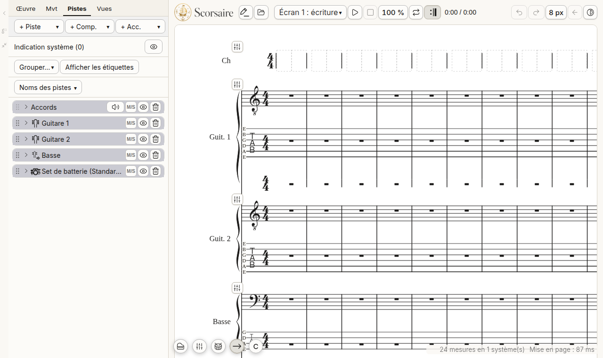
Les trois zones à connaître :
- La partition, au centre : c'est là qu'on touche pour choisir une mesure, une note, ou pour écrire.
- Le panneau latéral, à gauche sur ordinateur : onglets Œuvre, Mvt (mouvement), Pistes et Vues. Sur tablette et téléphone il n'existe pas : ses contenus s'ouvrent dans des feuilles qui montent du bas de l'écran.
- La barre de lecture et de fichier : lecture, arrêt, boucle, annuler, refaire, choix de l'écran, apparence. Sur tablette et téléphone elle se trouve en bas.
Ouvrir, enregistrer, créer
Le bouton Fichier (icône de dossier ouvert) ouvre un menu : ouvrir, enregistrer, nouvelle partition, exporter, et l'accès aux pistes, aux réglages et au choix de l'écran. Une partition Scorsaire s'enregistre en fichier .scorsaire. Scorsaire sait aussi importer MusicXML, Guitar Pro, iReal Pro, MIDI et d'autres formats.
Quand vous remplacez la partition ouverte (nouvelle, ouvrir), Scorsaire demande d'abord s'il faut enregistrer.
Thème et apparence
Le bouton d'apparence (un disque mi-clair, mi-sombre) règle le thème clair, sombre ou à contraste élevé, et l'épaisseur du texte. Par défaut Scorsaire suit le réglage de votre appareil.
Les cinq écrans
On passe d'un écran à l'autre avec le menu Écran de la barre de lecture.
| Écran | À quoi il sert |
|---|---|
| 1. Écriture | Écrire, corriger, écouter : notes, tablature, accords, paroles, mixeur. C'est la vérité de la musique. |
| 2. Parties | Préparer des pages à imprimer : titre, numéros de mesure, sauts de page, une partie par instrument. |
| 3. Feuilles | Préparer des feuilles pour des lecteurs : une case par morceau ou par exercice, avec les options que le lecteur pourra changer. |
| 4. Synchro | Faire sonner la partition sur un enregistrement (pistes audio séparées). |
| 5. YouTube | Poser des fragments de partition sur une vidéo YouTube. Cet écran demande une page servie par internet. |
Les écrans 4 et 5 sont vides tant que rien n'est chargé : un seul bouton Charger… vous attend.
Écrire des notes
Touchez le crayon (icône de crayon avec un trait) : la barre de saisie apparaît. Puis touchez une portée à l'endroit où vous voulez poser une note : elle s'écrit avec la durée choisie.
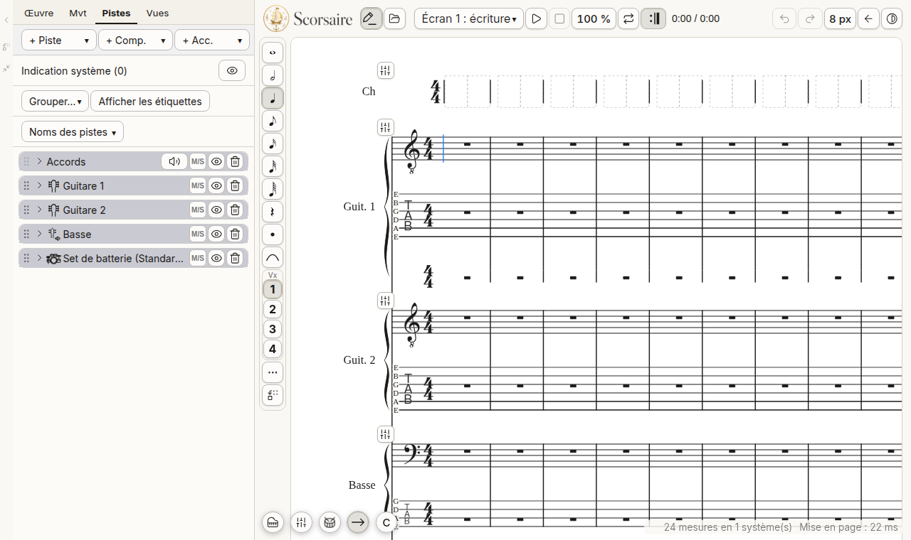
- Durée : ronde, blanche, noire, croche, double, triple et quadruple croche. La durée choisie reste jusqu'au prochain changement.
- Silence : écrit un silence à la place d'une note.
- Pointée : rallonge la note de la moitié de sa valeur.
- Liaison : lie la note à la suivante (touche T au clavier).
- Modes spéciaux (les trois points) : batterie, accordéon.
- Position de la barre : à gauche, à droite ou en bas, selon ce qui vous gêne le moins.
Autres façons d'écrire
- Tablature : touchez une portée de tablature ; une petite boîte propose les frettes (0 à 12, puis une page pour les frettes plus hautes) et les durées.
- Clavier de piano à l'écran (icône de piano) et manche de guitare : jouez la note, elle s'écrit.
- Clavier MIDI : branchez-le, il écrit comme le piano à l'écran.
- Enregistrement : jouez sur un clavier, Scorsaire écrit ce que vous avez joué.
- Grille de batterie : en mode batterie, un tableau de cases par son (grosse caisse, caisse claire, charleston…) écrit le rythme plus vite que note par note.
- Accords : sur la piste d'accords, touchez une case pour écrire le nom de l'accord (fondamentale, qualité, basse).
Choisir et corriger
Touchez une mesure : une barre d'outils apparaît juste au-dessus. Les poignées rondes aux bords de la zone violette permettent d'étendre le choix à plusieurs mesures et plusieurs portées.
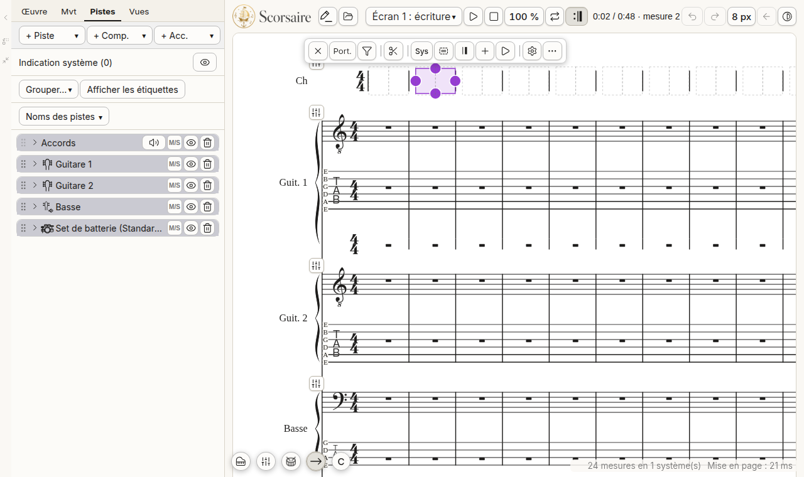
La barre propose, de gauche à droite :
- Fermer le choix ;
- Port. : étendre le choix à toute la portée ;
- Filtre : choisir seulement certaines voix, notes ou éléments ;
- Ciseaux : copier, couper, coller, vider, supprimer ;
- Sys : ce qui concerne tout le système : tempo et métronome, sauts et marqueurs, parties de la forme, texte de portée, techniques de jeu, armure, chiffrage, repères d'accompagnement, conteneurs ;
- Barre de mesure, reprises, volta ;
- Insérer des mesures (le signe plus) ;
- Lecture : boucle, lire d'ici, jouer ou couper ;
- Propriétés de la portée (la roue dentée) ;
- Plus (les trois points) : toute la hauteur, décor, paroles.
Changer le chiffrage, l'armure, transposer
Dans l'onglet Mvt : Transposer, Chiffrage… et Armure….
- Chiffrage (4/4 vers 12/8, par exemple) : les notes restent dans leur mesure. Une mesure plus longue est complétée par des silences ; une mesure plus courte est coupée, et Scorsaire vous dit d'abord ce qui serait perdu.
- Armure : le son ne change pas, seule l'écriture change (do dièse devient ré bémol, par exemple). Pour monter ou descendre la musique, utilisez Transposer.
Écouter
La partition se joue avec un moteur de sons (SoundFont) téléchargé au premier lancement ; en attendant, un petit moteur léger joue.
- Lecture (triangle) et Arrêt (carré, retour au début). L'espace démarre et arrête aussi.
- Tiroir de lecture : le bouton fléché à côté de lecture ouvre vitesse, boucle, reprises, mixeur et temps. Sur ordinateur il s'ouvre à droite ; sur téléphone il s'ouvre en panneau au-dessus de la barre du bas.
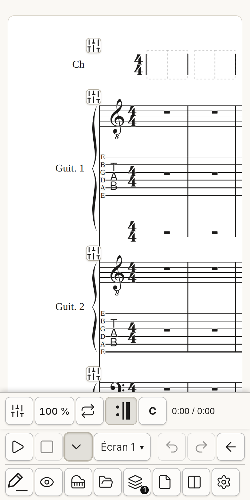
- Vitesse : de 25 % à 200 %. Un appui long revient à 100 %.
- Boucle : choisissez des mesures, posez la boucle avec Lecture dans la barre de la mesure ; le bouton de boucle de la barre de lecture l'allume ou l'éteint.
- Reprises : par défaut les reprises, voltas et sauts sont suivis. L'icône de reprise les ignore.
- C (concert) : affiche le son réel des instruments transpositeurs.
- Mixeur : un curseur de volume et de panoramique par piste, muet et solo, et pour chaque piste un traitement : dynamique MIDI, compresseur et égaliseur.
Tablette et téléphone
Scorsaire s'adapte à l'écran :
- Feuilles du bas : les menus et les réglages montent du bas de l'écran, avec des actions écrites en toutes lettres.
- Boutons : trois tailles (petit, moyen, grand) dans Réglages › Taille des boutons. Un écran tactile démarre en grand.
- Type d'affichage (Réglages › Cet appareil) : automatique, téléphone ou tablette.
- Saisie de la mesure : choisissez une mesure, puis l'icône d'agrandissement dans sa barre (ou son menu « … »). La mesure s'affiche en gros en haut de l'écran et les outils de saisie restent en bas. Les flèches changent de mesure ou de portée ; ×1, ×1,5, ×2 agrandissent ; ↔ garde la mesure entière dans la largeur de l'écran, en réduisant l'écriture quand on ajoute des notes.
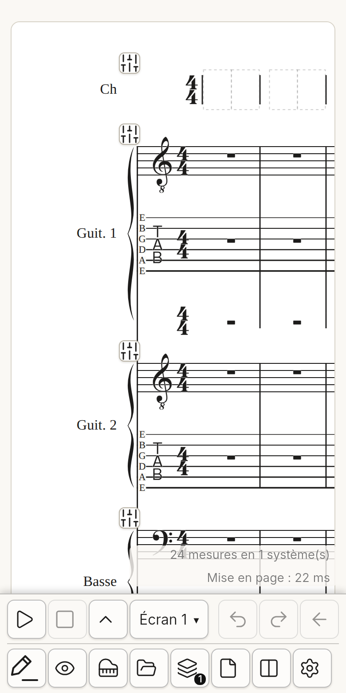
Le Lecteur et les recueils
Le Lecteur est une application séparée, faite pour lire sur scène ou en cours : elle ne modifie jamais la musique. Elle s'ouvre à l'adresse publique du projet et s'installe sur une tablette comme une application.
- Elle ouvre un recueil (
.scorsaire-recueil, plusieurs morceaux), des partitions.scorsaire, et des fichiers ChordPro. - Tourner la page : un appui à droite avance, un appui sur le quart gauche recule. Un balayage vers le bas depuis le haut (ou la touche M) ouvre le menu.
- Menu : liste des morceaux (ordre, recherche), transposition, zoom, réglages de lecture (affichage par instrument, paroles avec accords, colonnes, taille de l'écriture).
- Verrou : l'ordre et la transposition sont verrouillés pour éviter les gestes par erreur. Un appui long sur le cadenas les libère.
Les fichiers ChordPro
ChordPro est un format texte très répandu pour les chansons : les accords sont écrits entre crochets, juste avant la syllabe où ils tombent, et des lignes entre accolades donnent la structure.
`` {title: Le soleil} {key: Am} {start_of_verse} [Am]Le so[G]leil se lève sur la [F]mer {end_of_verse} {start_of_chorus: Refrain} [C]Chante avec [G]moi {end_of_chorus} ``
Ouvrez un fichier .cho, .chopro, .chordpro, .crd ou .pro dans le Lecteur : chaque strophe devient une carte colorée (Couplet, Refrain, Pont…), les accords sont écrits au-dessus des mots, et le refrain est en italique. Les accords écrits sur une ligne au-dessus des paroles sont aussi compris. Le menu du recueil permet d'exporter le morceau affiché en ChordPro, transposé comme à l'écran.
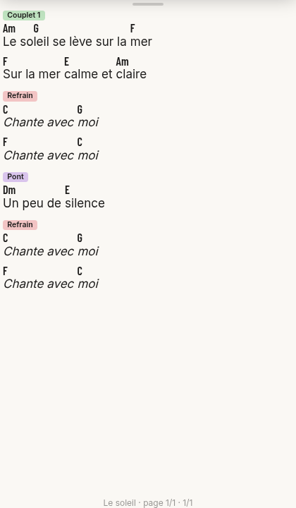
Exporter
Menu Fichier › Exporter :
| Format | Pour quoi faire |
|---|---|
| SVG | Une image vectorielle de la page, pour un document ou un site. |
| MIDI | Le morceau joué, pour un autre logiciel de musique. |
| MusicXML, MXL | Échanger la partition avec un autre éditeur. |
| Guitar Pro | Ouvrir le morceau dans Guitar Pro. |
| Audio (WAV / Opus) | Un fichier son : le mixage complet, une piste par fichier, ou des groupes de pistes. |
| Accords pour Flibuste | La grille d'accords, pour les logiciels de la suite Flibuste. |
| Recueil | Ajouter le morceau à un recueil pour le Lecteur. |
Pour imprimer, passez par l'écran 2 : la page est imprimée par le navigateur, ce qui permet aussi d'enregistrer en PDF.
L'export audio
Choisissez les fichiers voulus :
- Mixage complet : le morceau comme vous l'entendez ;
- Une piste par fichier : cochez les pistes à écrire à part ;
- Groupes : donnez un nom à un groupe et cochez ses pistes (la rythmique, par exemple).
Puis le format : WAV 16 ou 24 bits (sans perte, gros fichiers) ou Opus à 96, 128 ou 192 kb/s (petit et de bonne qualité). Plusieurs fichiers sont rangés dans une archive .zip.
Questions fréquentes
Je n'entends rien. Utilisez Réglages › Audio › Test du son. Au premier lancement le moteur de sons se télécharge (environ 9 Mo) ; il faut une connexion.
Une icône n'est pas claire. Cherchez-la dans le glossaire ci-dessous, ou gardez le doigt appuyé dessus pour voir son nom.
Mes réglages disparaissent. Les réglages d'appareil (taille des boutons, thème, zoom du Lecteur) sont gardés dans le navigateur de l'appareil, pas dans le fichier. Enregistrez la partition pour garder la musique.
Où est ma partition ? Elle est dans le fichier .scorsaire que vous avez enregistré. Scorsaire ne l'envoie nulle part.
Glossaire des icônes
Cette liste est relevée automatiquement sur le logiciel : chaque icône est accompagnée de ce que dit son infobulle. Elle montre les boutons des écrans 1 et 2 ; ceux des autres écrans reprennent les mêmes icônes.
En haut de l’écran
- Saisie : touchez une portée pour poser une note
- Fichier : ouvrir, enregistrer, nouvelle, exporter, pistes, réglages, écran
Barre de lecture et barre du bas
- Lecture
- Arrêt (retour au début)
- Annuler (Ctrl/⌘+Z)
- Refaire (Ctrl/⌘+Maj+Z ou Ctrl+Y)
- Retour : fermer le tiroir
- Apparence : thème et contraste
- Options de lecture : arrêt, vitesse, reprises, boucle, mixeur, audio
- Saisie : touchez une portée pour poser une note
- Vues : tout, vues enregistrées, enregistrer, modifier
- Clavier de piano : touches allumées pendant la lecture
- Fichier : ouvrir, enregistrer, nouvelle, exporter, pistes, réglages, écran
- Pistes et portées — écran 1
- Œuvre
- Mouvement
- Réglages
- Options de lecture : arrêt, vitesse, reprises, boucle, mixeur, audio
Tiroir de lecture
- Boucle
- Les reprises, voltas et sauts sont suivis : appuyer pour les ignorer
- Mixeur
Barre de saisie des notes
- Ronde
- Blanche
- Noire
- Croche
- Double croche
- Triple croche
- Quadruple croche
- Silence
- Pointée
- Liaison de prolongation (T)
- Modes spéciaux (batterie, accordéon)
- Position de la barre : gauche, droite ou bas
Barre qui apparaît sur une mesure choisie
- Effacer la plage
- Filtre de sélection (voix, notes, éléments)
- Édition : copier, couper, coller, vider, supprimer
- Conteneur
- Barre de mesure, reprises, volta
- Insérer des mesures
- Lecture : boucle, lire d'ici, jouer / couper
- Propriétés de la portée
- Plus : toute la hauteur, filtre, décor, paroles
Panneau latéral
- Replier le panneau latéral
- Passer le panneau de l'autre côté
- Pleine hauteur (le bandeau du bas se réduit)
Liste des pistes
- Masquer les objets système
- Glisser pour déplacer la piste
- Ouvrir la piste « … »
- Ne pas jouer les accords de cette piste
- Masquer sur la partition — appui long : solo visuel (cette piste seule)
- Supprimer cette piste
- Ouvrir la piste « … »
- Ouvrir la piste « … »
- Ouvrir la piste « … »
Contrôles flottants d’une piste
- Volume
Écran 2 : parties
- Nouvelle partie
- Portrait
- Paysage
- Moins : diminue la valeur à côté de laquelle il se trouve (marges, tailles, nombres)
- Plus : augmente la valeur à côté de laquelle il se trouve (marges, tailles, nombres)
Écran 3 : feuilles
- Replier le panneau latéral
Scorsaire: manual
Scorsaire is a music score editor that fits in one single file: open it with nothing to install, on a computer, a tablet or a phone. It writes music as notation, tablature, chord grids, rhythm staves and drums, plays it with real sounds, and prepares pages to print or share.
This manual explains how to use it, screen by screen, and what each icon means. It is written for everyone: if you are new, read the chapters in order; if you are looking for a button, go straight to the icon glossary at the end.
Getting started
On first launch, Scorsaire opens on a starter score: 24 empty measures in 4/4, with a chord track, two guitars (staff and tablature), a bass and a drum kit. Everything can be changed afterwards.
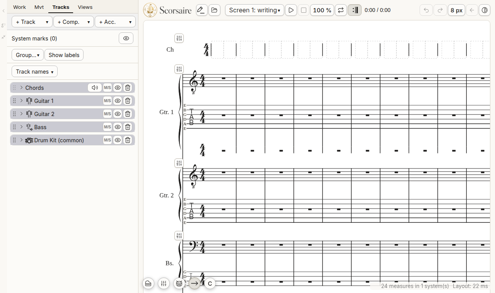
The three areas to know:
- The score, in the middle: touch it to choose a measure or a note, or to write.
- The side panel, on the left on a computer: tabs Work, Mvt (movement), Tracks and Views. There is none on a tablet or a phone: its contents open in sheets that rise from the bottom of the screen.
- The playback and file bar: play, stop, loop, undo, redo, screen choice, appearance. On a tablet or a phone it is at the bottom.
Open, save, create
The File button (open folder icon) opens a menu: open, save, new score, export, and the way to tracks, settings and the choice of screen. A Scorsaire score is saved as a .scorsaire file. Scorsaire can also import MusicXML, Guitar Pro, iReal Pro, MIDI and other formats.
When you replace the open score (new, open), Scorsaire first asks whether to save.
Theme and appearance
The appearance button (a half-light, half-dark disc) sets the light, dark or high-contrast theme, and the weight of the text. By default Scorsaire follows your device's setting.
The five screens
Switch from one screen to another with the Screen menu of the playback bar.
| Screen | What it is for |
|---|---|
| 1. Writing | Write, correct, listen: notes, tablature, chords, lyrics, mixer. This is the truth of the music. |
| 2. Parts | Prepare pages to print: title, measure numbers, page breaks, one part per instrument. |
| 3. Sheets | Prepare sheets for readers: one cell per song or exercise, with the options the reader may change. |
| 4. Sync | Make the score play along a recording (separate audio tracks). |
| 5. YouTube | Place score fragments over a YouTube video. This screen needs a page served over the internet. |
Screens 4 and 5 are empty until something is loaded: a single Load… button waits for you.
Writing notes
Touch the pencil (pencil icon with a line): the entry bar appears. Then touch a staff where you want to place a note: it is written with the chosen duration.
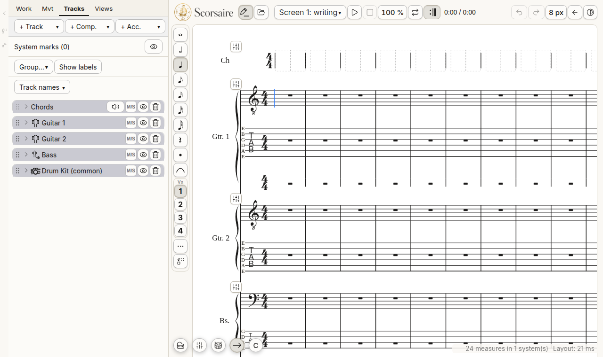
- Duration: whole, half, quarter, eighth, 16th, 32nd and 64th. The chosen duration stays until you change it.
- Rest: writes a rest instead of a note.
- Dotted: lengthens the note by half its value.
- Tie: ties the note to the next one (T key on the keyboard).
- Special modes (the three dots): drums, accordion.
- Bar position: left, right or bottom, whichever bothers you least.
Other ways to write
- Tablature: touch a tablature staff; a small box offers the frets (0 to 12, then a page for higher frets) and the durations.
- On-screen piano keyboard (piano icon) and guitar neck: play the note, it is written.
- MIDI keyboard: plug it in, it writes like the on-screen piano.
- Recording: play on a keyboard, Scorsaire writes what you played.
- Drum grid: in drum mode, a table of cells per sound (bass drum, snare, hi-hat…) writes a rhythm faster than note by note.
- Chords: on the chord track, touch a cell to write the chord name (root, quality, bass).
Choosing and correcting
Touch a measure: a toolbar appears just above it. The round handles at the edges of the purple zone extend the choice to several measures and several staves.
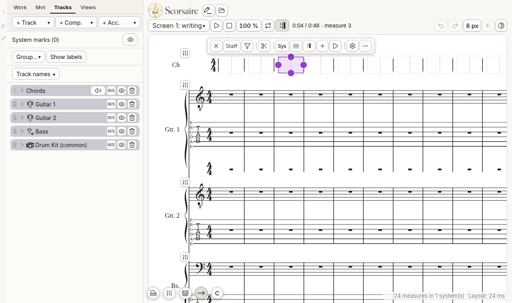
From left to right the bar offers:
- Close the choice;
- Staff (Port.): extend the choice to the whole staff;
- Filter: choose only some voices, notes or elements;
- Scissors: copy, cut, paste, empty, delete;
- Sys: whatever concerns the whole system: tempo and metronome, jumps and markers, form parts, staff text, playing techniques, key signature, time signature, accompaniment cues, containers;
- Barline, repeats, volta;
- Insert measures (the plus sign);
- Playback: loop, play from here, play or mute;
- Staff properties (the gear);
- More (the three dots): full height, decor, lyrics.
Change the time signature, the key signature, transpose
In the Mvt tab: Transpose, Time signature… and Key signature….
- Time signature (4/4 to 12/8, for example): the notes stay in their measure. A longer measure is filled with rests; a shorter measure is cut, and Scorsaire first tells you what would be lost.
- Key signature: the sound does not change, only the writing does (C sharp becomes D flat, for example). To move the music up or down, use Transpose.
Listening
The score is played with a sound engine (SoundFont) downloaded on first launch; until then a small light engine plays.
- Play (triangle) and Stop (square, back to the start). The space bar also starts and stops.
- Playback drawer: the arrow button next to play opens speed, loop, repeats, mixer and time. On a computer it opens to the right; on a phone it opens as a panel above the bottom bar.
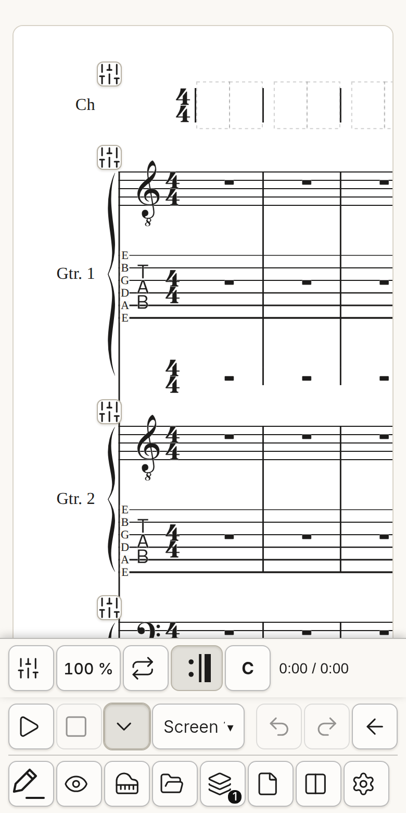
- Speed: from 25 % to 200 %. A long press goes back to 100 %.
- Loop: choose measures, set the loop with Playback in the measure bar; the loop button of the playback bar turns it on or off.
- Repeats: by default repeats, voltas and jumps are followed. The repeat icon ignores them.
- C (concert): shows the real sound of transposing instruments.
- Mixer: a volume and pan slider per track, mute and solo, and a treatment for each track: MIDI dynamics, compressor and equaliser.
Tablet and phone
Scorsaire adapts to the screen:
- Bottom sheets: menus and settings rise from the bottom of the screen, with actions written out in full.
- Buttons: three sizes (small, medium, large) in Settings › Button size. A touch screen starts at large.
- Display type (Settings › This device): automatic, phone or tablet.
- Measure entry: choose a measure, then the enlarge icon in its bar (or its “…” menu). The measure is shown large at the top of the screen and the entry tools stay at the bottom. The arrows change measure or staff; ×1, ×1.5, ×2 enlarge; ↔ keeps the whole measure in the width of the screen, making the writing smaller as you add notes.
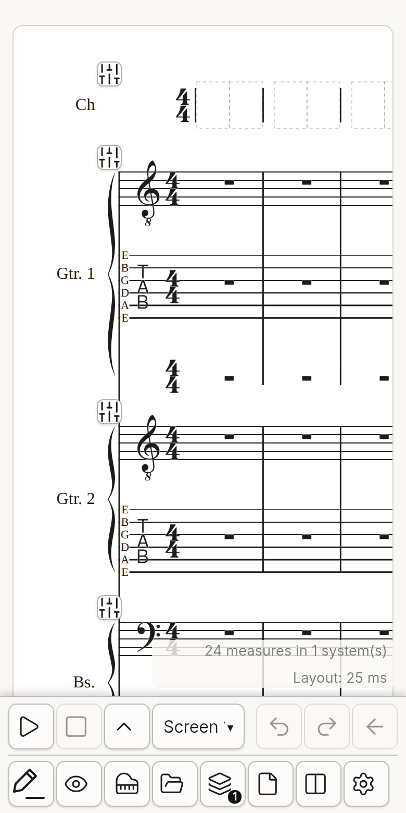
The Reader and the collections
The Reader is a separate application, made for reading on stage or in a lesson: it never changes the music. It opens at the project's public address and installs on a tablet like an app.
- It opens a collection (
.scorsaire-recueil, several songs),.scorsairescores, and ChordPro files. - Turning pages: a tap on the right goes forward, a tap on the left quarter goes back. Swiping down from the top (or the M key) opens the menu.
- Menu: song list (order, search), transposition, zoom, reading settings (display by instrument, lyrics with chords, columns, size of the writing).
- Lock: the order and the transposition are locked to avoid accidental gestures. A long press on the padlock releases them.
ChordPro files
ChordPro is a widespread text format for songs: chords are written in square brackets, right before the syllable they fall on, and lines in curly brackets give the structure.
`` {title: Le soleil} {key: Am} {start_of_verse} [Am]Le so[G]leil se lève sur la [F]mer {end_of_verse} {start_of_chorus: Refrain} [C]Chante avec [G]moi {end_of_chorus} ``
Open a .cho, .chopro, .chordpro, .crd or .pro file in the Reader: each stanza becomes a coloured card (Verse, Chorus, Bridge…), chords are written above the words, and the chorus is in italics. Chords written on a line above the lyrics are understood too. The collection menu lets you export the song on screen as ChordPro, transposed as shown.
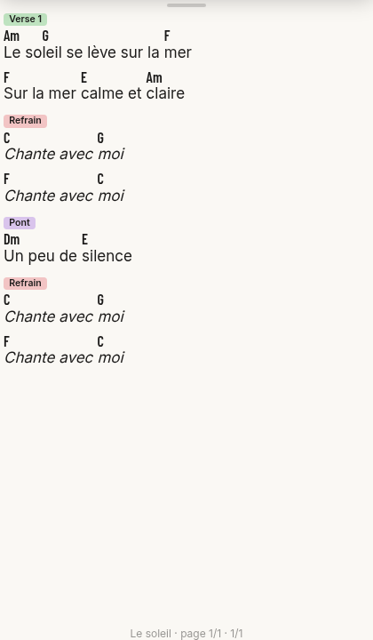
Exporting
File › Export menu:
| Format | What it is for |
|---|---|
| SVG | A vector image of the page, for a document or a website. |
| MIDI | The played piece, for another music program. |
| MusicXML, MXL | Exchange the score with another editor. |
| Guitar Pro | Open the piece in Guitar Pro. |
| Audio (WAV / Opus) | A sound file: the full mix, one file per track, or groups of tracks. |
| Chords for Flibuste | The chord grid, for the Flibuste suite software. |
| Collection | Add the song to a collection for the Reader. |
To print, go through screen 2: the page is printed by the browser, which also lets you save as PDF.
Audio export
Choose the files you want:
- Full mix: the piece as you hear it;
- One file per track: tick the tracks to write apart;
- Groups: name a group and tick its tracks (the rhythm section, for example).
Then the format: WAV 16 or 24-bit (lossless, large files) or Opus at 96, 128 or 192 kb/s (small and good quality). Several files are put in a .zip archive.
Frequently asked questions
I hear nothing. Use Settings › Audio › Sound test. On first launch the sound engine downloads (about 9 MB); you need a connection.
An icon is unclear. Look it up in the glossary below, or keep your finger pressed on it to see its name.
My settings disappear. Device settings (button size, theme, Reader zoom) are kept in the device's browser, not in the file. Save the score to keep the music.
Where is my score? In the .scorsaire file you saved. Scorsaire sends it nowhere.
Icon glossary
This list is read automatically from the software: each icon comes with what its tooltip says. It shows the buttons of screens 1 and 2; those of the other screens reuse the same icons.
At the top of the screen
- Entry: touch a staff to place a note
- File: open, save, new, export, tracks, settings, screen
Playback bar and bottom bar
- Play
- Stop (back to start)
- Undo (Ctrl/⌘+Z)
- Redo (Ctrl/⌘+Shift+Z or Ctrl+Y)
- Back: close the drawer
- Appearance: theme and contrast
- Playback options: stop, speed, repeats, loop, mixer, audio
- Entry: touch a staff to place a note
- Views: all, saved views, save, edit
- Piano keyboard: keys lit during playback
- File: open, save, new, export, tracks, settings, screen
- Tracks and staves — screen 1
- Work
- Movement
- Settings
- Playback options: stop, speed, repeats, loop, mixer, audio
Playback drawer
- Loop
- Repeats, voltas and jumps are followed: press to ignore them
- Mixer
Note entry bar
- Whole
- Half
- Quarter
- Eighth
- 16th
- 32nd
- 64th
- Rest
- Dotted
- Tie (T)
- Special modes (drums, accordion)
- Bar position: left, right or bottom
Bar that appears on a chosen measure
- Clear range
- Selection filter (voices, notes, elements)
- Edit: copy, cut, paste, empty, delete
- Container
- Barline, repeats, volta
- Insert measures
- Playback: loop, play from here, play / mute
- Staff properties
- More: full height, filter, decor, lyrics
Side panel
- Fold the side panel
- Move the panel to the other side
- Full height (the bottom bar gets narrower)
Track list
- Hide system objects
- Drag to move the track
- Open track “…”
- Do not play this track's chords
- Hide on the score — long press: visual solo (this track alone)
- Remove this track
- Open track “…”
- Open track “…”
- Open track “…”
Floating controls of a track
- Volume
Screen 2: parts
- New part
- Portrait
- Landscape
- Minus: lowers the value it sits beside (margins, sizes, numbers)
- Plus: raises the value it sits beside (margins, sizes, numbers)
Screen 3: sheets
- Fold the side panel